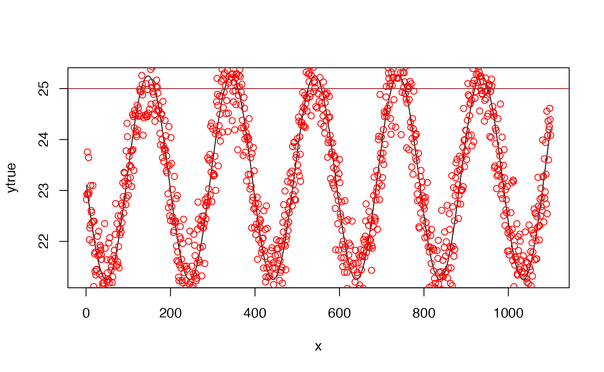
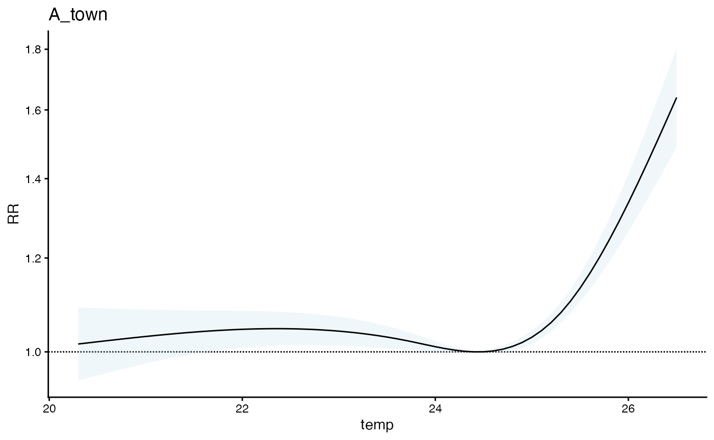

Test of population sizes
pop_size_test.RmdThis vignette
Lets first make a simple function to estimate the attributable fraction, assuming a the following relationship between both exposure magnitude and exposure timing.
AF = rescale(z from 0 to 0.3)
where
z is a function applied to the last three days of temperature
t0 = 25
z = function(t3, t2, t1) {
ifelse(t3 > t0, 0.1 * (t3 - t0), 0) +
ifelse(t2 > t0, 0.2 * (t2 - t0), 0) +
ifelse(t1 > t0, 0.4 * (t1 - t0), 0)
}Lets test that this works, so simulate some periodic exposure data:
set.seed(123)
n = 1100
x = 1:n
aa = 2
bb = 0.2
cc = 100
vv = 23.25
ytrue = aa * sin(bb / (2*pi)* (x + cc)) + vv
y = ytrue + rnorm(n, sd = 0.5)
plot(x, ytrue, 'l')
points(x, y, col = 'red')
abline(h = 25, col = 'brown')
And now get the underlying AF that are due to excess temperature
AF_vec <- vector("numeric", n)
AF_vec[1] <- AF_vec[2] <- 0
for(i in 3:n) {
local_z <- z(y[i], y[i-1], y[i-2])
AF_vec[i] <- local_z
}
AF_vec <- scales::rescale(AF_vec, to = c(0, 0.3))
summary(AF_vec)
#> Min. 1st Qu. Median Mean 3rd Qu. Max.
#> 0.00000 0.00000 0.00000 0.01745 0.00000 0.30000
plot(x, AF_vec, 'l')And now simulate baseline deaths – this doesn’t need to be related to the exposure beecause all we are tracking is excess mortality.
baseline_deaths = runif(n, 100, 120)And update deaths based on the AF
excess_deaths = baseline_deaths * AF_vec
new_deaths = baseline_deaths + excess_deaths
new_deaths = as.integer(round(new_deaths))
plot(x, new_deaths, 'l')So now get an estimate of the exposure response function here, using our package
exp_df <- data.frame(x, temp = y)
exp_df$dt = lubridate::make_date(2020, 1, 1) + exp_df$x
exp_df$TOWN20 = 'A_town'
exp_df$COUNTY20 = 'A_county'
exp_df$x <- NULL # a bug to fix
exposure_columns <- list(
"date" = "dt",
"exposure" = "temp",
"geo_unit" = "TOWN20",
"geo_unit_grp" = "COUNTY20"
)
exp_mat <- make_exposure_matrix(exp_df, exposure_columns)
head(exp_mat)
#> temp dt TOWN20 COUNTY20 strata
#> <num> <IDat> <char> <char> <char>
#> 1: 24.67424 2020-05-01 A_town A_county A_town:yr2020:mn05:dow06
#> 2: 24.18750 2020-05-02 A_town A_county A_town:yr2020:mn05:dow07
#> 3: 24.46034 2020-05-03 A_town A_county A_town:yr2020:mn05:dow01
#> 4: 24.62049 2020-05-04 A_town A_county A_town:yr2020:mn05:dow02
#> 5: 25.71186 2020-05-05 A_town A_county A_town:yr2020:mn05:dow03
#> 6: 24.50379 2020-05-06 A_town A_county A_town:yr2020:mn05:dow04
#> match_strata explag1 explag2 explag3 explag4 explag5
#> <char> <num> <num> <num> <num> <num>
#> 1: A_town:2020-05-01 24.05615 24.09483 24.14950 24.47164 24.51713
#> 2: A_town:2020-05-02 24.67424 24.05615 24.09483 24.14950 24.47164
#> 3: A_town:2020-05-03 24.18750 24.67424 24.05615 24.09483 24.14950
#> 4: A_town:2020-05-04 24.46034 24.18750 24.67424 24.05615 24.09483
#> 5: A_town:2020-05-05 24.62049 24.46034 24.18750 24.67424 24.05615
#> 6: A_town:2020-05-06 25.71186 24.62049 24.46034 24.18750 24.67424And now make the outcome dataset
deaths_df <- data.frame(dt = exp_df$dt,
deaths = new_deaths,
TOWN20 = 'A_town',
COUNTY20 = 'A_county')
outcome_columns <- list(
"date" = "dt",
"outcome" = "deaths",
"geo_unit" = "TOWN20",
"geo_unit_grp" = "COUNTY20"
)
sim_tbl <- make_outcome_table(deaths_df, outcome_columns)
#> Missing values in outcome xgrid were set to 0
sim_tbl
#> dt TOWN20 COUNTY20 deaths strata strata_total
#> <IDat> <char> <char> <int> <char> <num>
#> 1: 2020-05-01 A_town A_county 114 A_town:yr2020:mn05:dow06 561
#> 2: 2020-05-02 A_town A_county 111 A_town:yr2020:mn05:dow07 581
#> 3: 2020-05-03 A_town A_county 107 A_town:yr2020:mn05:dow01 589
#> 4: 2020-05-04 A_town A_county 114 A_town:yr2020:mn05:dow02 455
#> 5: 2020-05-05 A_town A_county 113 A_town:yr2020:mn05:dow03 454
#> ---
#> 455: 2022-09-26 A_town A_county 116 A_town:yr2022:mn09:dow02 439
#> 456: 2022-09-27 A_town A_county 104 A_town:yr2022:mn09:dow03 439
#> 457: 2022-09-28 A_town A_county 108 A_town:yr2022:mn09:dow04 446
#> 458: 2022-09-29 A_town A_county 111 A_town:yr2022:mn09:dow05 553
#> 459: 2022-09-30 A_town A_county 115 A_town:yr2022:mn09:dow06 565
#> match_strata
#> <char>
#> 1: A_town:2020-05-01
#> 2: A_town:2020-05-02
#> 3: A_town:2020-05-03
#> 4: A_town:2020-05-04
#> 5: A_town:2020-05-05
#> ---
#> 455: A_town:2022-09-26
#> 456: A_town:2022-09-27
#> 457: A_town:2022-09-28
#> 458: A_town:2022-09-29
#> 459: A_town:2022-09-30
m1 <- condPois_1stage(exposure_matrix = exp_mat,
outcomes_tbl = sim_tbl)
#>
#> crossbasis args:
#>
#> maxlag: 5
#>
#> argvar:
#> List of 2
#> $ fun : chr "ns"
#> $ knots: Named num [1:2] 23.7 25.3
#> ..- attr(*, "names")= chr [1:2] "50%" "90%"
#>
#> arglag:
#> List of 2
#> $ fun : chr "ns"
#> $ knots: num [1:2] 0.878 2.095
#>
#> strata:
#> A_town:yr2020:mn05:dow06
#> strata_min: 0
plot(m1)
Looks good (an interesting to note that there is a bump up in the exposure response curve at the lower end when we know there is not relationship there … more on that later !)
Now the question we want to answer is, if this relationship is different for a larger place and we put the two together in the same (i) 1-stage model or (ii) 2-stage model, how do things change – is the larger county weighted more.
Lets wrap our entire outcome dataset creation pipeline into a single function, assuming that the two spatial regions experience the same temperature.
get_sim_outcome <- function(exposure_ts, t0, z1, z2, z3,
AFmax, baseline_outcomes) {
# the z function
z = function(t3, t2, t1) {
ifelse(t3 > t0, z1 * (t3 - t0), 0) +
ifelse(t2 > t0, z2 * (t2 - t0), 0) +
ifelse(t1 > t0, z3 * (t1 - t0), 0)
}
# AF
n = length(exposure_ts)
AF_vec <- vector("numeric", n)
AF_vec[1] <- AF_vec[2] <- 0
for(i in 3:n) {
local_z <- z(exposure_ts[i], exposure_ts[i-1], exposure_ts[i-2])
AF_vec[i] <- local_z
}
AF_vec <- scales::rescale(AF_vec, to = c(0, AFmax))
# outcomes
excess_outcomes = baseline_outcomes * AF_vec
new_outcomes = baseline_outcomes + excess_outcomes
# make a df
return(as.integer(round(new_outcomes)))
}Confirm that it works
sim_out1 <- get_sim_outcome(exposure_ts = y, t0 = 25,
z1 = 0.1, z2 = 0.2, z3 = 0.4,
AFmax = 0.3, baseline_outcomes = baseline_deaths)
cor(sim_out1, new_deaths)
#> [1] 1Great, now lets make two for different populations
There are probably a few important edge cases:
- the smaller population has an uncertain and null relationship